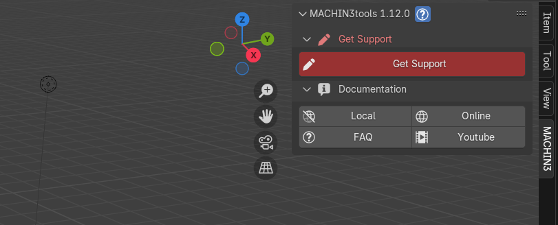
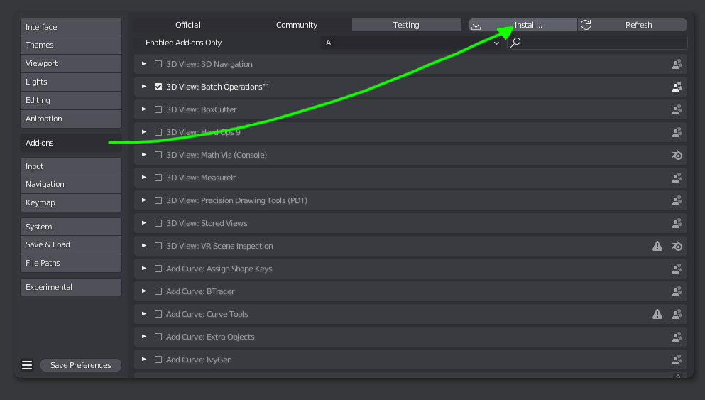
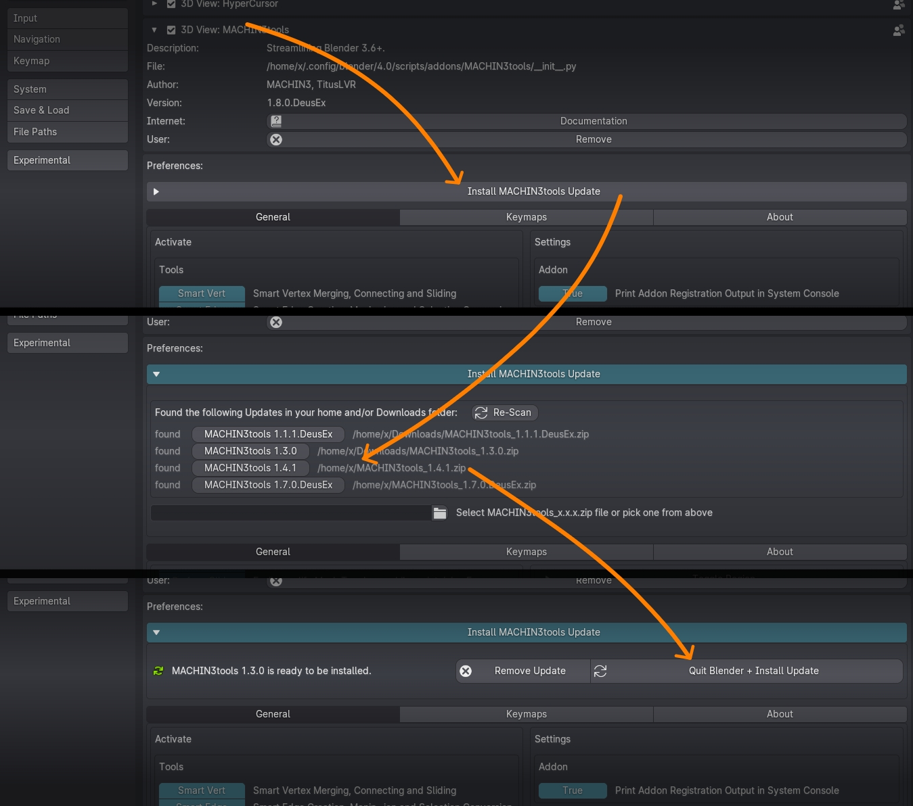

Requirements
Experimental Builds
Experimental Blender builds such as 5.0-alpha/beta may work, but are not officially supported, and fixing any issues related to them, will not be a priority. Still, feel free to report any issues you encounter.
Older versions?
If you want to run MACHIN3tools on an older Blender version outside of the currently supported range, you can reach out to me via email and I'll supply an older addon version.
Latest MACHIN3tools
The latest version is 1.13.1 released on July 19th, 2025, available on Superhiveformerly Blender Market and Gumroad.
Legacy Addon?
MACHIN3tools is what Blender 4.2+ calls a Legacy Addon now.
This unfortunate term does not imply any obsolescence at all, it's just a distinction compared to the new extensions system.
See this page to learn what's new in the latest versions, or see the changelog for the full, detailed release history.
How to Download?
Depending on where you bought MACHIN3tools, you can download it from the respective platform:
- Download MACHIN3tools from Superhiveformerly known as Blender Market
- Download MACHIN3tools from Gumroad
Also see this and the following in the FAQs for details on downloading updates.
How to Install?
The following video should ideally answer all your questions, and it addresses every installation issue I've seen people encounter occasionally over the past 8 years.
Keep in mind
If you come across an issue that isn't covered in the video, you can reach out to me via email.
You can also check out the official Blender documentation on addon installation in here.
Recommended Installation Method
Drag and Drop (Fresh and Update Installations)
Blender supports drag and dropping addon .zip files (both legacy and extension addons!) from your system's filebrowser on the open Blender application to do the installation.
This is super convenient, and also works for update installations, but you should always restart Blender after updating to a new addon version.
Otherwise, the alternate approaches described below also work for installing and updating MACHIN3tools.
Verify MACHIN3tools is installed
 MACHIN3tools Get Support tool in the 3D view's sidebar
After a fresh installation, MACHIN3tools will show up under the MACHIN3 tab in the 3D view's sidebar with only the GetSupport tool and Documentation links shown.
Note
This primarily serves as Installation Verification, and can be disabled in the addon preferences.
I do this now, because I've had complaints from people claiming MACHIN3tools is faulty and doesn't install correctly, simply because they expect every addon to always be present in the 3D view's sidebar.
MACHIN3tools is a huge addon but only a handful of tools or tool groups are accessible in the sidebar, and all of them need to be activated first - at least in the Prime variant.
Set Up MACHIN3tools to your liking
After Installation, you should go to the addon preferences and activate the various tools or menus you want to use - or deactivate the ones enabled by default, which in the Prime variant is only the Focus tool and the Modes pie, in an attempt to not overwhelm newcomers.
Alternate Installation Methods
Fresh Installation
If you don't have a previous version of MACHIN3tools installed, you can follow the default installation process from within Blender's preferences in the addons tab, and install from the .zip file.
Note
May look slightly different depending on your specific Blender version.
 installation from the Addons tab of Blender's preferences, by selecting the addon's .zip file
Update Installation
Warning
When updating to a new addon version, avoid disabling and uninstalling the previous version, or Blender will forget any custom settings or keymaps you have set!
Instead update like described in the video above or using the Integrated Updated or via the Manual Filebrowser Installation.
If you do have a previous version installed, and you want to update (or downgrade) to another version, you can use the Integrated MACHIN3tools Updater.
Note
This is not internet based. You still need to download the .zip file yourself.
The benefit of doing this, over disabling and removing the old version from the Blender preferences, is that it will keep any custom settings or keymaps you may have done.
Using the integrated updater is very straight forward:
- Unfold it from the top of the MACHIN3tools addon preferences.
- Select the MACHIN3tools zip file to install, if it's in your home dir or Downloads folder, it will be found automatically.
- Verify it's the version you want, and Quit Blender to install the update, otherwise remove it.
 3 steps to update: unfold, pick update .zip, quit Blender
Manual Filebrowser Installation
If you know what you are doing, and know where Blender expects its addons to be installed, you can of course also manually extract the addon's .zip file to the correct location.
I recommend against this these days, as the above approaches are less error prone.
Special Case: Blender on MacOS
MacOS users should install Blender properly, by following the official instructions.
Avoid running it just from the Downloads folder!
Note that, for dragging of files and folders, you need to hold down the COMMAND key.
This will ensure AppTranslocation1 is avoided.
{kind=link}
Furthermore, your download may not actually result in a .zip file, and instead extract automatically. This can and needs to be be changed in Safari settings.
Special Case: Blender on Arch Linux
Arch Linux users and users of other Arch based or similar rolling release distros are advised to use the official Blender builds.
The Blender package in the Community repository does not supply its own Python, and does not follow official recommendations.
As a consequence, your system's python version may not work properly with Blender and/or MACHIN3tools.
Note
Use the official tarball from blender.org to be on the safe side, it comes with a bundled Python and is the correct version that Blender addons are built against.
-
Learn more about AppTranslocation. ↩